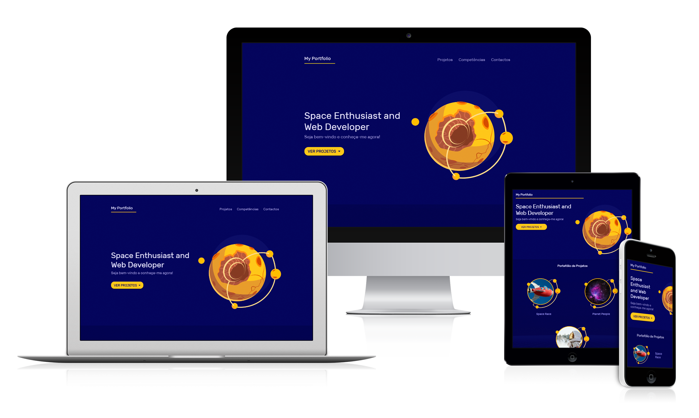
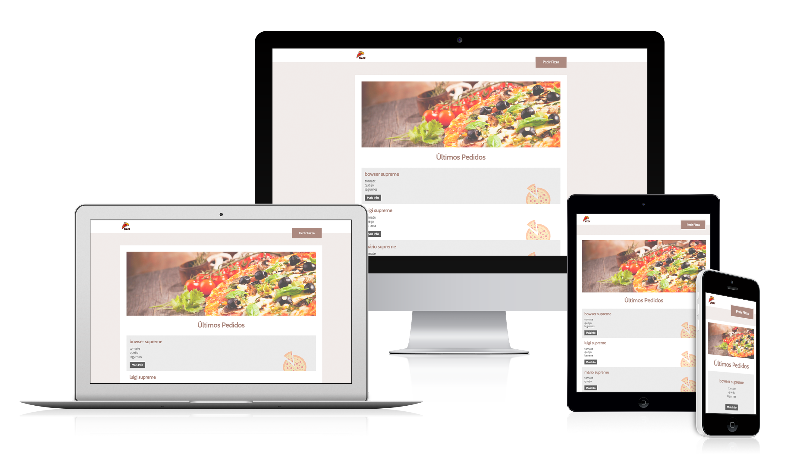
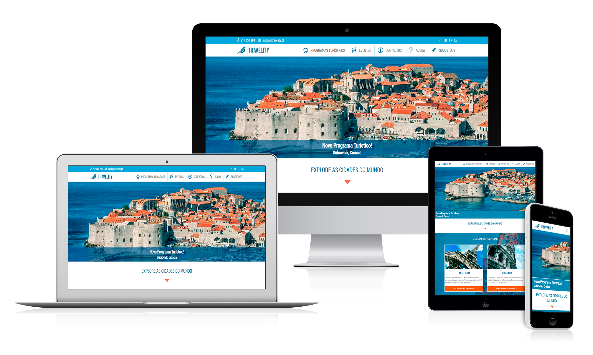

Portefólio

Projeto Fictício
2020
Space Portfolio
Tipo de Site
Portefólio, Single PageCategorias
Promoção ProfissionalDesign Responsivo
SimLínguagens Utilizadas
HTML, CSS, JavascriptEndereço Gratuito 'Infinity Free'
spaceportfolio-arturponte.epizy.comBrowser Recomendado
Google ChromeObservações do Projeto
- A respeitar uma estrutura de página única, as cores e imagens escolhidas transmitem ao visitante o fascínio do universo.
- Todos os elementos são pensados de forma a terem muito espaço para respirar em toda a página, mostrando a ideia da imensidão cósmica e estimulando a imaginação humana.
- Em programação, o website é desenhado com o sistema de colunas em CSS possibilitando o design responsivo em todos os ecrãs. É também trabalhado Javascript a interagir com algumas animações desenvolvidas em CSS.
- O objectivo do projeto é promover o portefólio de um possível cliente, numa página corrida dividida em três secções: área de projetos, competências e um formulário para contacto.

Projeto Fictício
2019
Pizzas
Tipo de Site
Dinâmico, InterativoCategorias
GastronomiaDesign Responsivo
SimLínguagens Utilizadas
HTML, CSS, Javascript, PHP, SQL - Base de DadosEndereço Gratuito 'Infinity Free'
pizzas-arturponte.epizy.comBrowser Recomendado
Google ChromeObservações do Projeto
- Desenhado e programado para ser um website dinâmico com acesso a uma base de dados, a ideia é permitir ao visitante pedir uma pizza através de um pequeno formulário.
- A página inicial mostra todos os pedidos realizados e os respetivos autores que se encontram armazenados e registados através da base de dados.
- De forma a ter este projeto interativo com o utilizador, o pedido é feito num formulário protegido por toda uma validação escrita em PHP até ser guardado na base de dados.
- Após o processo da validação, é gerada automaticamente uma página dinâmica reservada para esse pedido onde os visitantes poderão ver, editar as informações ou apagar.

Projeto Fictício
2019
Travelity: Programas Turísticos
Tipo de Site
Institucional, e-CommerceCategorias
Viagens, Turismo e LazerDesign Responsivo
SimLínguagens Utilizadas
HTML, CSS, JavascriptEndereço Gratuito 'Infinity Free'
travelity-arturponte.epizy.comBrowser Recomendado
Google ChromeObservações do Projeto
- É realizado todo um processo criativo desde as escolhas estéticas e a estrutura do website até ao estudo da usabilidade, programação e possível público-alvo.
- Todo o site é trabalhado em HTML para os conteúdos, em CSS para a estrutura, cores e letras e em Javascript para a funcionalidade do menu de navegação na versão mobile.
- Desenvolver este projeto permitiu uma maior experiência pessoal com toda a tecnologia web e uma grande aprendizagem no desenvolvimento criativo, funcional e experimental.
- A servir como o principal trabalho de estudo do curso de Webdesign na LSD, foi desenhada para este projeto apenas a página inicial do website.